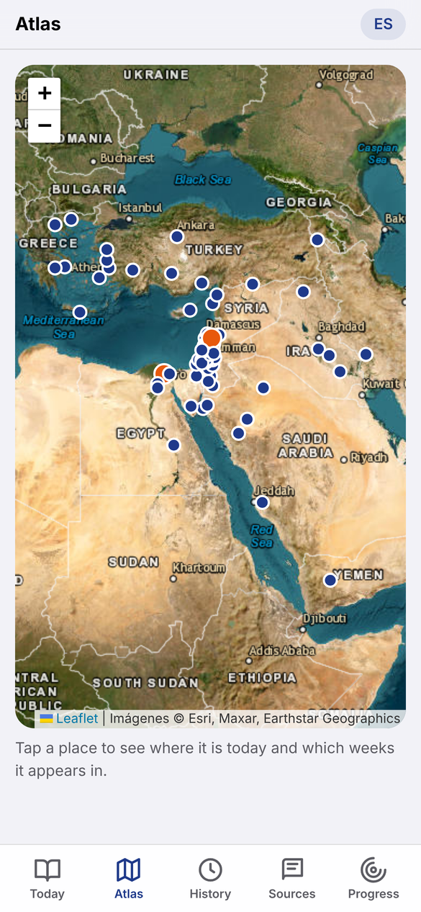
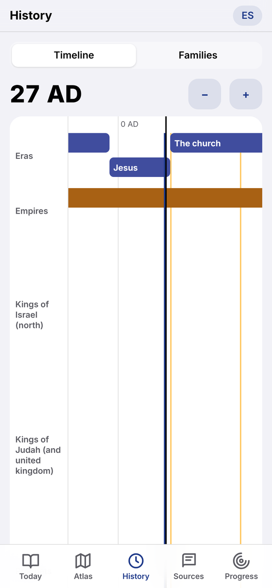
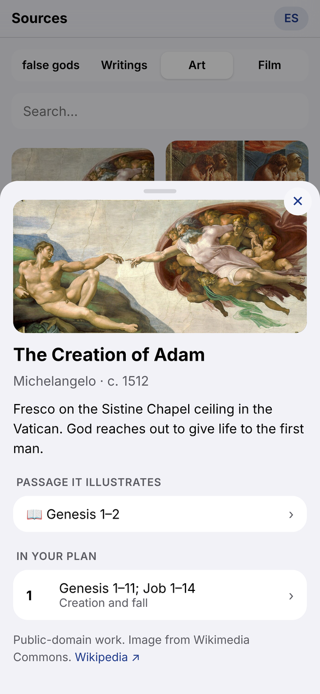
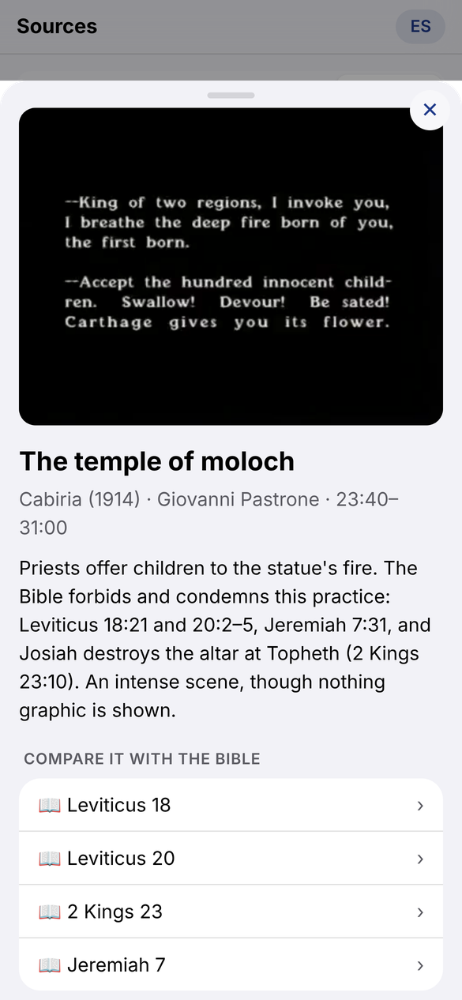
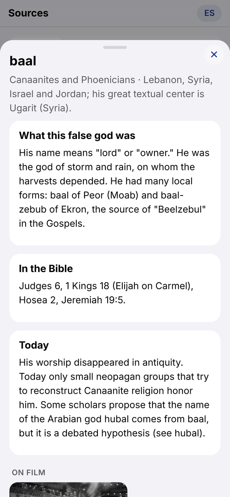

Una Biblia clásica.
Una lectura que se puede ver.
La Biblia completa en 52 semanas, en el orden en que ocurrieron los hechos, con mapas, familias, línea del tiempo, arte y cine junto al texto. Para quienes entienden mejor viendo.
Lámpara es á mis pies tu palabra, y lumbrera á mi camino.Salmos 119:105 · Reina-Valera 1909
Elegimos las ediciones clásicas: la Reina-Valera de 1909 en español y la King James de 1769 en inglés. Las dos son de dominio público y se leen tal como fueron publicadas, sin revisiones posteriores.
Lo que agregamos es todo lo que ayuda a entenderlo: dónde pasó cada cosa, quién era quién, qué ocurría en el mundo y cómo se veía. Muchas personas entienden mejor viendo que solo leyendo. Lumbrera está hecha para ellas.
Un mapa satelital con 73 lugares bíblicos y el país donde queda cada uno hoy. Ur está en Irak, Edom en Jordania, Nínive junto a Mosul. Cada semana muestra su región y su ruta.

De Adán a Jesús, con la línea de la promesa resaltada por Abraham y David. Muévelo, amplíalo, abre y cierra ramas, y toca a cualquiera para ver quién era y en qué semanas aparece.
Desliza por los siglos y ve, año por año, quién gobernaba Israel y Judá, qué profeta hablaba y qué imperio dominaba, y si cada rey fue fiel o no, según el libro de Reyes.

La última cena de Leonardo, La creación de Adán de Miguel Ángel, Caravaggio, Rembrandt, Rubens. Cada obra se abre en grande, con zoom, y te lleva al pasaje que ilustra.

Escenas de Cabiria (1914), Los Diez Mandamientos (1923) y El Rey de reyes (1927), recortadas en el momento exacto de cada pasaje. Todas de dominio público, con una nota sobre lo que la película añade al texto.

baal, moloc, asera, quemós, dagón, marduk y más: qué eran, dónde se adoraban, qué dice la Biblia de ellos y qué queda hoy.

Siete lecturas por semana. Job junto a los patriarcas, los profetas junto a los reyes de su tiempo, las cartas de Pablo dentro de la historia de Hechos.
Solo ábrela en tu navegador. Tu progreso se guarda en tu dispositivo: sin cuenta, sin anuncios y sin rastreo.
Estamos construyendo las apps avanzadas, y serán siempre gratuitas: sin anuncios y sin compras dentro de la app. Añaden:
¿Eres parte de una iglesia o ministerio? Escríbenos: una organización sin fines de lucro puede publicar las apps sin pagar la cuota de Apple.